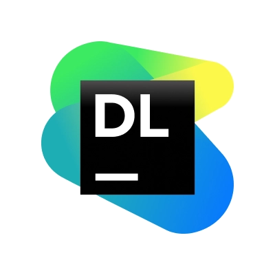
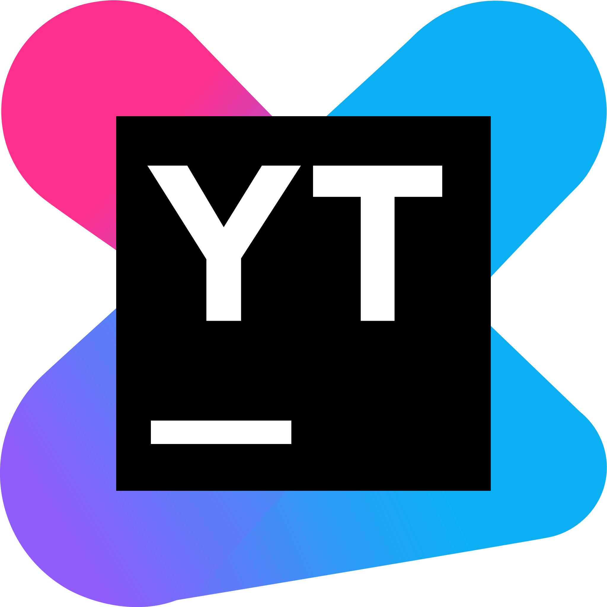

Trust-by-Design for AI Developer Tools
avalur.github.io/talks/TrustIntelligence.html
How to Build Trust?
Euclid (≈300 BC)
Trust through explicit premises: small set of postulates → all geometry

Hilbert's Program (1920s)
The ambition of "cast-iron" trust: Completeness, Consistency, and Algorithmic Decidability!
Cold Shower of Gödel's Theorems
"Theorem 1: Any consistent formal system F within which a certain amount of elementary arithmetic can be carried out is incomplete; i.e., there are statements of the language of F which can neither be proved nor disproved in F."
"Theorem 2: For any consistent system F within which a certain amount of elementary arithmetic can be carried out, the consistency of F cannot be proved in F itself."
Then How to Build Trust in AI?
"Probabilistic Logics and the Synthesis of Reliable Organisms from Unreliable Components."
Pivot to architecture: cumulative hierarchies, external verification
JetBrains' Way: Trust-by-Design in Dev Tools
IDE: Secure and Effective Defaults
Building Resilience: Data → Model → Deploy
üìä Data (contracts, evals, coverage)
- Schema contracts: typed datasets + versions; enforce in PR via Qodana checks
- Drift/poison eval sets: store "golden" evals in Git repo; run regular data-evals in TeamCity pipelines
- Synthetic edge-case coverage: generate rare examples (fuzz/synthetic) and publish reports as build artifacts within Datalore 
ü§ñ Model (guardrails, decoding, spec IO)
- Guardrails before/after: input/output validators in Qodana as policy-as-code for prompts/functions
- Constrained decoding: temperature/top-p caps by environment; "abstain" paths mapped directly from IDE ( /) to integration tests
- Spec-driven function calling: strictly typed tool-schemas; autogen test fixtures from specifications in TeamCity jobs
üöÄ Deploy (safe release, fast rollback)
- Canary & shadow: multi-stage rollouts via TeamCity (staging → small % canary → full); metrics and alerts in YouTrack 
- Circuit breakers: automatic model shutdown on SLO degradation (latency/quality) — feature flags toggled from TeamCity tasks
- Rollbacks & model feature flags: model versioning as artifacts; instant rollback and A/B in TeamCity pipeline; rollback policy documented in Git